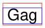

TextPage¶
This class represents text and images shown on a document page. All MuPDF document types are supported.
The usual ways to create a textpage are DisplayList.get_textpage() and Page.get_textpage(). Because there is a limited set of methods in this class, there exist wrappers in Page which are handier to use. The last column of this table shows these corresponding Page methods.
For a description of what this class is all about, see Appendix 2.
Method |
Description |
page get_text or search method |
|---|---|---|
extract plain text |
“text” |
|
synonym of previous |
“text” |
|
plain text grouped in blocks |
“blocks” |
|
all words with their bbox |
“words” |
|
page content in HTML format |
“html” |
|
page content in XHTML format |
“xhtml” |
|
page text in XML format |
“xml” |
|
page content in dict format |
“dict” |
|
page content in JSON format |
“json” |
|
page content in dict format |
“rawdict” |
|
page content in JSON format |
“rawjson” |
|
Search for a string in the page |
Class API
- class TextPage¶
- extractText(sort=False)¶
- extractTEXT(sort=False)¶
Return a string of the page’s complete text. The text is UTF-8 unicode and in the same sequence as specified at the time of document creation.
- Parameters:
sort (bool) – (new in v1.19.1) sort the output by vertical, then horizontal coordinates. In many cases, this should suffice to generate a “natural” reading order.
- Return type:
str
- extractBLOCKS()¶
Textpage content as a list of text lines grouped by block. Each list items looks like this:
(x0, y0, x1, y1, "lines in the block", block_no, block_type)
The first four entries are the block’s bbox coordinates, block_type is 1 for an image block, 0 for text. block_no is the block sequence number. Multiple text lines are joined via line breaks.
For an image block, its bbox and a text line with some image meta information is included – not the image content.
This is a high-speed method with just enough information to output plain text in desired reading sequence.
- Return type:
list
- extractWORDS(delimiters=None)¶
Changed in v1.23.5: added
delimitersparameter
Textpage content as a list of single words with bbox information. An item of this list looks like this:
(x0, y0, x1, y1, "word", block_no, line_no, word_no)
- Parameters:
delimiters (str) – (new in v1.23.5) use these characters as additional word separators. By default, all white spaces (including the non-breaking space
0xA0) indicate start and end of a word. Now you can specify more characters causing this. For instance, the default will return"john.doe@outlook.com"as one word. If you specifydelimiters="@."then the four words"john","doe","outlook","com"will be returned. Other possible uses include ignoring punctuation charactersdelimiters=string.punctuation. The “word” strings will not contain any delimiting character.
This is a high-speed method which e.g. allows extracting text from within given areas or recovering the text reading sequence.
- Return type:
list
- extractHTML()¶
Textpage content as a string in HTML format. This version contains complete formatting and positioning information. Images are included (encoded as base64 strings). You need an HTML package to interpret the output in Python. Your internet browser should be able to adequately display this information, but see Controlling Quality of HTML Output.
- Return type:
str
- extractDICT(sort=False)¶
Textpage content as a Python dictionary. Provides same information detail as HTML. See below for the structure.
- Parameters:
sort (bool) – (new in v1.19.1) sort the output by vertical, then horizontal coordinates. In many cases, this should suffice to generate a “natural” reading order.
- Return type:
dict
- extractJSON(sort=False)¶
Textpage content as a JSON string. Created by
json.dumps(TextPage.extractDICT()). It is included for backlevel compatibility. You will probably use this method ever only for outputting the result to some file. The method detects binary image data and converts them to base64 encoded strings.- Parameters:
sort (bool) – (new in v1.19.1) sort the output by vertical, then horizontal coordinates. In many cases, this should suffice to generate a “natural” reading order.
- Return type:
str
- extractXHTML()¶
Textpage content as a string in XHTML format. Text information detail is comparable with
extractTEXT(), but also contains images (base64 encoded). This method makes no attempt to re-create the original visual appearance.- Return type:
str
- extractXML()¶
Textpage content as a string in XML format. This contains complete formatting information about every single character on the page: font, size, line, paragraph, location, color, etc. Contains no images. You need an XML package to interpret the output in Python.
- Return type:
str
- extractRAWDICT(sort=False)¶
Textpage content as a Python dictionary – technically similar to
extractDICT(), and it contains that information as a subset (including any images). It provides additional detail down to each character, which makes using XML obsolete in many cases. See below for the structure.- Parameters:
sort (bool) – (new in v1.19.1) sort the output by vertical, then horizontal coordinates. In many cases, this should suffice to generate a “natural” reading order.
- Return type:
dict
- extractRAWJSON(sort=False)¶
Textpage content as a JSON string. Created by
json.dumps(TextPage.extractRAWDICT()). You will probably use this method ever only for outputting the result to some file. The method detects binary image data and converts them to base64 encoded strings.- Parameters:
sort (bool) – (new in v1.19.1) sort the output by vertical, then horizontal coordinates. In many cases, this should suffice to generate a “natural” reading order.
- Return type:
str
- search(needle, quads=False)¶
Changed in v1.18.2
Search for string and return a list of found locations.
- Parameters:
needle (str) – the string to search for. Upper and lower cases will all match if needle consists of ASCII letters only – it does not yet work for “Ä” versus “ä”, etc.
quads (bool) – return quadrilaterals instead of rectangles.
- Return type:
list
- Returns:
a list of Rect or Quad objects, each surrounding a found needle occurrence. As the search string may contain spaces, its parts may be found on different lines. In this case, more than one rectangle (resp. quadrilateral) are returned. (Changed in v1.18.2) The method now supports dehyphenation, so it will find e.g. “method”, even if it was hyphenated in two parts “meth-” and “od” across two lines. The two returned rectangles will contain “meth” (no hyphen) and “od”.
Note
Overview of changes in v1.18.2:
The
hit_maxparameter has been removed: all hits are always returned.The Rect parameter of the TextPage is now respected: only text inside this area is examined. Only characters with fully contained bboxes are considered. The wrapper method
Page.search_for()correspondingly supports a clip parameter.Hyphenated words are now found.
Overlapping rectangles in the same line are now automatically joined. We assume that such separations are an artifact created by multiple marked content groups, containing parts of the same search needle.
Example Quad versus Rect: when searching for needle “pymupdf”, then the corresponding entry will either be the blue rectangle, or, if quads was specified, the quad Quad(ul, ur, ll, lr).

- rect¶
The rectangle associated with the text page. This either equals the rectangle of the creating page or the
clipparameter ofPage.get_textpage()and text extraction / searching methods.Note
The output of text searching and most text extractions is restricted to this rectangle. (X)HTML and XML output will however always extract the full page.
Structure of Dictionary Outputs¶
Methods TextPage.extractDICT(), TextPage.extractJSON(), TextPage.extractRAWDICT(), and TextPage.extractRAWJSON() return dictionaries, containing the page’s text and image content. The dictionary structures of all four methods are almost equal. They strive to map the text page’s information hierarchy of blocks, lines, spans and characters as precisely as possible, by representing each of these by its own sub-dictionary:
A page consists of a list of block dictionaries.
A (text) block consists of a list of line dictionaries.
A line consists of a list of span dictionaries.
A span either consists of the text itself or, for the RAW variants, a list of character dictionaries.
RAW variants: a character is a dictionary of its origin, bbox and unicode.
All PyMuPDF geometry objects herein (points, rectangles, matrices) are represented by there “like” formats: a rect_like tuple is used instead of a Rect, etc. The reasons for this are performance and memory considerations:
This code is written in C, where Python tuples can easily be generated. The geometry objects on the other hand are defined in Python source only. A conversion of each Python tuple into its corresponding geometry object would add significant – and largely unnecessary – execution time.
A 4-tuple needs about 168 bytes, the corresponding Rect 472 bytes - almost three times the size. A “dict” dictionary for a text-heavy page contains 300+ bbox objects – which thus require about 50 KB storage as 4-tuples versus 140 KB as Rect objects. A “rawdict” output for such a page will however contain 4 to 5 thousand bboxes, so in this case we talk about 750 KB versus 2 MB.
Please also note, that only bboxes (= rect_like 4-tuples) are returned, whereas a TextPage actually has the full position information – in Quad format. The reason for this decision is again a memory consideration: a quad_like needs 488 bytes (3 times the size of a rect_like). Given the mentioned amounts of generated bboxes, returning quad_like information would have a significant impact.
In the vast majority of cases, we are dealing with horizontal text only, where bboxes provide entirely sufficient information.
In addition, the full quad information is not lost: it can be recovered as needed for lines, spans, and characters by using the appropriate function from the following list:
recover_quad()– the quad of a complete spanrecover_span_quad()– the quad of a character subset of a spanrecover_line_quad()– the quad of a linerecover_char_quad()– the quad of a character
As mentioned, using these functions is ever only needed, if the text is not written horizontally – line["dir"] != (1, 0) – and you need the quad for text marker annotations (Page.add_highlight_annot() and friends).

Page Dictionary¶
Key |
Value |
|---|---|
width |
width of the |
height |
height of the |
blocks |
list of block dictionaries |
Block Dictionaries¶
Block dictionaries come in two different formats for image blocks and for text blocks.
Image block:
Key |
Value |
|---|---|
type |
1 = image ( |
bbox |
image bbox on page ( |
number |
block count ( |
ext |
image type ( |
width |
original image width ( |
height |
original image height ( |
colorspace |
colorspace component count ( |
xres |
resolution in x-direction ( |
yres |
resolution in y-direction ( |
bpc |
bits per component ( |
transform |
matrix transforming image rect to bbox ( |
size |
size of the image in bytes ( |
image |
image content ( |
mask |
image mask content ( |
Possible values of the “ext” key are “bmp”, “gif”, “jpeg”, “jpx” (JPEG 2000), “jxr” (JPEG XR), “png”, “pnm”, and “tiff”.
Note
An image block is generated for all and every image occurrence on the page. Hence there may be duplicates, if an image is shown at different locations.
TextPage and corresponding method
Page.get_text()are available for all document types. Only for PDF documents, methodsDocument.get_page_images()/Page.get_images()offer some overlapping functionality as far as image lists are concerned. But both lists may or may not contain the same items. Any differences are most probably caused by one of the following:“Inline” images (see page 214 of the Adobe PDF References) of a PDF page are contained in a textpage, but do not appear in
Page.get_images().Annotations may also contain images – these will not appear in
Page.get_images().Image blocks in a textpage are generated for every image location – whether or not there are any duplicates. This is in contrast to
Page.get_images(), which will list each image only once (per reference name).Images mentioned in the page’s
objectdefinition will always appear inPage.get_images()[1]. But it may happen, that there is no “display” command in the page’scontents(erroneously or on purpose). In this case the image will not appear in the textpage.
The image’s “transformation matrix” is defined as the matrix, for which the expression
bbox / transform == pymupdf.Rect(0, 0, 1, 1)is true, lookup details here: Image Transformation Matrix.A transparent image may be accompanied by a mask image. This is stored under key
"mask"and has the format of aDeviceGrayPNG image. Otherwise the value of this key isNone. If present, you may be able to recover (an equivalent of) the original image – i.e. with transparency – by creating Pixmap objects from the “image”, respectively “mask” values and overlay them. This is not guaranteed to always work because mask images come in multiple formats, of which not all qualify for the conditions under which overlaying Pixmaps are supported. Here is a code snippet:
>>> base = pymupdf.Pixmap(block["image"])
>>> mask = pymupdf.Pixmap(block["mask"])
>>> result = pymupdf.Pixmap(base, mask)
Text block:
Key |
Value |
|---|---|
type |
0 = text (int) |
bbox |
block rectangle, |
number |
block count (int) |
lines |
list of text line dictionaries |
Line Dictionary¶
Key |
Value |
|---|---|
bbox |
line rectangle, |
wmode |
writing mode (int): 0 = horizontal, 1 = vertical |
dir |
writing direction, |
spans |
list of span dictionaries |
The value of key “dir” is the unit vector dir = (cosine, -sine) of the angle, which the text has relative to the x-axis [2]. See the following picture: The word in each quadrant (counter-clockwise from top-right to bottom-right) is rotated by 30, 120, 210 and 300 degrees respectively.
{kind=link}
Span Dictionary¶
Spans contain the actual text. A line contains more than one span only, if it contains text with different font properties.
Changed in version 1.14.17 Spans now also have a bbox key (again).
Changed in version 1.17.6 Spans now also have an origin key.
Key |
Value |
|---|---|
bbox |
span rectangle, |
origin |
the first character’s origin, |
font |
font name (str) |
ascender |
ascender of the font (float) |
descender |
descender of the font (float) |
size |
font size (float) |
flags |
font characteristics (int) |
char_flags |
char characteristics (int) |
color |
text color in sRGB format 0xRRGGBB (int). |
alpha |
text opacity 0..255 (int). |
text |
(only for |
chars |
(only for |
Show/hide history
(New in version 1.25.3.0): Added “alpha” item.
(New in version 1.16.0): “color” is the text color encoded in sRGB (int) format, e.g. 0xFF0000 for red. There are functions for converting this integer back to formats (r, g, b) (PDF with float values from 0 to 1) sRGB_to_pdf(), or (R, G, B), sRGB_to_rgb() (with integer values from 0 to 255).
(New in v1.18.5): “ascender” and “descender” are font properties, provided relative to fontsize 1. Note that descender is a negative value. The following picture shows the relationship to other values and properties.
{kind=link}
These numbers may be used to compute the minimum height of a character (or span) – as opposed to the standard height provided in the “bbox” values (which actually represents the line height). The following code recalculates the span bbox to have a height of fontsize exactly fitting the text inside:
>>> a = span["ascender"]
>>> d = span["descender"]
>>> r = pymupdf.Rect(span["bbox"])
>>> o = pymupdf.Point(span["origin"]) # its y-value is the baseline
>>> r.y1 = o.y - span["size"] * d / (a - d)
>>> r.y0 = r.y1 - span["size"]
>>> # r now is a rectangle of height 'fontsize'
Caution
The above calculation may deliver a larger height! This may e.g. happen for OCRed documents, where the risk of all sorts of text artifacts is high. MuPDF tries to come up with a reasonable bbox height, independently from the fontsize found in the PDF. So please ensure that the height of span["bbox"] is larger than span["size"].
Note
You may request PyMuPDF to do all of the above automatically by executing pymupdf.TOOLS.set_small_glyph_heights(True). This sets a global parameter so that all subsequent text searches and text extractions are based on reduced glyph heights, where meaningful.
The following shows the original span rectangle in red and the rectangle with re-computed height in blue.
{kind=link}
“flags” is an integer, which represents font properties except for the first bit 0. They are to be interpreted like this:
bit 0: superscripted (
TEXT_FONT_SUPERSCRIPT) – not a font property, detected by MuPDF code.bit 1: italic (
TEXT_FONT_ITALIC)bit 2: serifed (
TEXT_FONT_SERIFED)bit 3: monospaced (
TEXT_FONT_MONOSPACED)bit 4: bold (
TEXT_FONT_BOLD)
Test these characteristics like so:
>>> if flags & pymupdf.TEXT_FONT_BOLD & pymupdf.TEXT_FONT_ITALIC:
print(f"{span['text']=} is bold and italic")
Bits 1 thru 4 are font properties, i.e. encoded in the font program. Please note, that this information is not necessarily correct or complete: fonts quite often contain wrong data here.
“char_flags” is an integer, which represents extra character properties:
bit 0: strikeout.
bit 1: underline.
bit 2: synthetic (always 0, see char dictionary).
bit 3: filled.
bit 4: stroked.
bit 5: clipped.
For example if not filled and not stroked (if not (char_flags & 2**3 & 2**4):
...) then the text will be invisible.
(char_flags is new in v1.25.2.)
Character Dictionary for extractRAWDICT()¶
Key |
Value |
|---|---|
origin |
character’s left baseline point, |
bbox |
character rectangle, |
synthetic |
bool. |
c |
the character (unicode) |
(synthetic is new in v1.25.3.)
This image shows the relationship between a character’s bbox and its quad:
{kind=link}
Footnotes